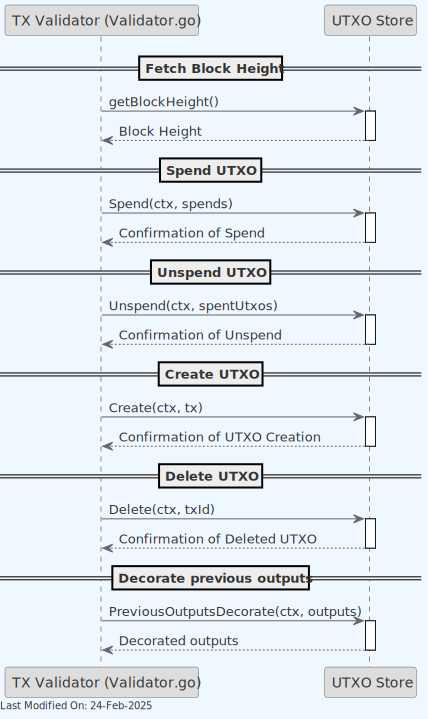
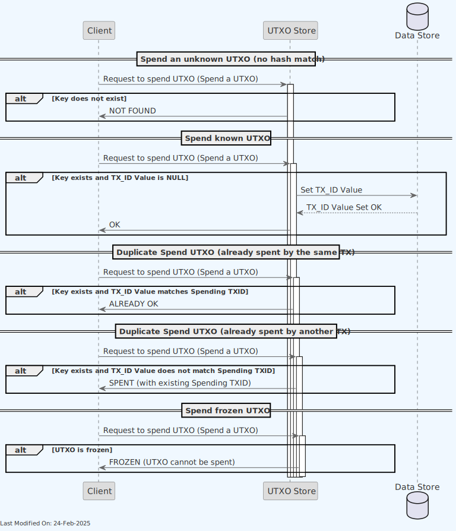

UTXO Store
Index
- Description
- Architecture
- UTXO: Data Model
- Use Cases
- Technology
- Performance Optimizations
- Directory Structure and Main Files
- Running the Store Locally
- Configuration and Settings
- Other Resources
1. Description
The UTXO set represents the current state of ownership of all Satoshi tokens in existence. Except for Coinbase transactions, every other valid transaction spends at least one UTXO and creates zero or more new UTXOs, plus zero or more locked outputs. The UTXOs that are being spent come from previously successful transactions, and these may be recorded in the current or a previous block. An unspent output may be created and spent in a few milliseconds, or it may remain unspent for decades, meaning that the unspent outputs must persist for as long as they remain unspent.
The UTXO Store is responsible for tracking spendable UTXOs (the UTXO set), based on the longest honest chain-tip in the network. These are UTXOs that can be used as inputs in new transactions. The UTXO Store is an internal datastore used by some of the services, such as the Asset Server, the TX Validator and the Block Assembly. The main purpose of this store is to maintain the UTXO data on behalf of other micro-services.
It handles the core functionalities of the UTXO Store:
- Health: Check the health status of the UTXO store service.
- Get: Retrieve a specific UTXO.
- GetMeta: Retrieve a specific UTXO meta data.
- Create: Add new UTXOs to the store.
- Spend/Unspend: Mark UTXOs as spent or reverse such markings, respectively.
- Delete: Remove UTXOs from the store.
- Block Height Management: Set and retrieve the current blockchain height, which can be crucial for determining the spendability of certain UTXOs based on locktime conditions.
- FreezeUTXOs / UnFreezeUTXOs: Mark UTXOs as frozen or unfrozen, in scenarios involving alert systems or temporary holds on specific UTXOs.
- ReAssignUTXO: Reassign a UTXO to a different owner.
Principles:
- All operations are atomic.
- All data is shared across servers with standard sharing algorithms.
- In production, the data is stored in a Master and Replica configuration.
- No centralised broker - all clients know where each hash is stored.
- No cross-transaction state is stored.
The UTXO Store includes functionality to freeze and unfreeze UTXOs, as well as re-assign them.
- BSV is the only blockchain that allows legal recourse for lost asset (token) recovery to legally rightful owners by design. The Alert System can also freeze assets based on court injunctions and legal notices.
- Teranode must be able to re-assign (a set of) UTXO(s) to another (specified) address at a specified block height.
2. Architecture
The UTXO Store is a micro-service that is used by other micro-services to retrieve or store / modify UTXOs.
The UTXO Store uses a number of different datastores, either in-memory or persistent, to store the UTXOs.

UTXO Store Operations Flow
The following diagram illustrates the complete flow of UTXO operations across all services, including transaction validation, conflict resolution, block mining, reorganization handling, alert system operations, and subtree validation:
The UTXO store implementation is consistent within a Teranode node (every service connects to the same specific implementation), and it is defined via settings (utxostore), as it can be seen in the following code fragment (main.go):
func getUtxoStore(ctx context.Context, logger ulogger.Logger) utxostore.Interface {
if utxoStore != nil {
return utxoStore
}
utxoStoreURL, err, found := gocore.Config().GetURL("utxostore")
if err != nil {
panic(err)
}
if !found {
panic("no utxostore setting found")
}
utxoStore, err = utxo_factory.NewStore(ctx, logger, utxoStoreURL, "main")
if err != nil {
panic(err)
}
return utxoStore
}
The following diagram provides a deeper level of detail into the UTXO Store's internal components and their interactions:
The following datastores are supported (either in development / experimental or production mode):
-
Aerospike.
-
Memory (In-Memory Store).
-
Sql (Postgres and SQLLite).
-
Nullstore.
Notice how SqlLite and the In-Memory store are in-memory, while Aerospike and Postgres are persistent (and shared with other services).
More details about the specific stores can be found in the Technology section.
3. UTXO: Data Model
3.1. What is an UTXO?
The Teranode UTXO is no different from Bitcoin UTXO. The following is a description of the Bitcoin UTXO model, focusing on the BSV implementation:
- Transaction Outputs: When a transaction occurs on the blockchain, it creates "transaction outputs," which are essentially chunks of cryptocurrency value. Each output specifies an amount and a condition under which it can be spent (a cryptographic script key that the receiver owns).
Under the external library github.com/ordishs/go-bt/output.go, we can see the structure of a transaction output.
type Output struct {
Satoshis uint64 `json:"satoshis"`
LockingScript *bscript.Script `json:"locking_script"`
}
Components of the Output struct:
-
Satoshis (
uint64):- The amount of BSV cryptocurrency associated with this output.
- The unit "Satoshis" refers to the smallest unit of Bitcoin (1 Bitcoin = 100 million Satoshis).
-
LockingScript (
*bscript.Script):- This field represents the conditions that must be met to spend the Satoshis in this output.
- The
LockingScript, often referred to as the "scriptPubKey" in Bitcoin's technical documentation, is a script written in Bitcoin's scripting language. - This script contains cryptographic conditions to unlock the funds.
Equally, we can see how a list of outputs is part of a transaction (github.com/ordishs/go-bt/tx.go):
type Tx struct {
Inputs []*Input `json:"inputs"`
Outputs []*Output `json:"outputs"`
Version uint32 `json:"version"`
LockTime uint32 `json:"locktime"`
}
- Unspent Transaction Outputs (UTXOs): A UTXO is a transaction output that hasn't been used as an input in a new transaction.
When a transaction occurs, it consumes one or more UTXOs as inputs and creates new UTXOs as outputs. The sum of the input UTXOs represents the total amount of Bitcoin being transferred, and the outputs represent the distribution of this amount after the transaction.
To "own" bitcoins means to control UTXOs on the blockchain that can be spent by the user (i.e., the user has the private key to unlock these UTXOs).
When a user creates a new transaction, the transaction references these UTXOs as inputs, proving his ownership by fulfilling the spending conditions set in these UTXOs (signing the transaction with the user's private key).
Independent UTXOs can be processed in parallel, potentially improving the efficiency of transaction validation.
UTXOs now have an additional state: frozen. A frozen UTXO cannot be spent until it is unfrozen.
To know more about UTXOs, please check https://protocol.bsvblockchain.org/transaction-lifecycle/transaction-inputs-and-outputs.
3.2. How are UTXOs stored?
When storing the UTXOs (Unspent Transaction Outputs) associated to a given Tx in Aerospike (see stores/utxo/aerospike/aerospike.go, our primary persisted datastore, the following information is kept:
-
Inputs: The transaction inputs, represented as a slice of byte arrays (
inputsbin). Each input includes the previous transaction output it spends from, as well as additional data such as the script and satoshis amount. -
Outputs: The transaction outputs, represented as a slice of byte arrays (
outputsbin). Each output contains the value in satoshis and the locking script. -
Version: The version number of the transaction (
versionbin). -
Fee: The fee associated with the transaction (
feebin). -
Size in Bytes: The size of the transaction in bytes (
sizeInBytesbin). -
UTXOs: A map representing the UTXOs associated with this transaction (
utxosbin). The keys are the UTXO hashes, and the values are empty strings initially. The values will be populated, once the UTXO is spent, with the spending Tx Id. -
Number of UTXOs: The number of UTXOs in the
utxosmap (recordUtxosbin). -
Spent UTXOs: A counter for the number of UTXOs that have been spent (
spentUtxosbin). -
Block IDs: The IDs of the blocks that include this transaction (
blockIDsbin). -
Coinbase Flag: A boolean indicating whether this transaction is a coinbase transaction (
isCoinbasebin).
These bins collectively store the necessary data to track the transaction's inputs, outputs, and its state within the blockchain.
Once the UTXO is spent, the spending tx_id will be saved.
-
To compute the hash of the key, the caller must know the complete data and calculate the hash before calling the API.
-
The hashing logic can be found in
UTXOHash.go:
func UTXOHash(previousTxid *chainhash.Hash, index uint32, lockingScript []byte, satoshis uint64) (*chainhash.Hash, error) {
if len(lockingScript) == 0 {
return nil, fmt.Errorf("locking script is nil")
}
if satoshis == 0 {
return nil, fmt.Errorf("satoshis is 0")
}
utxoHash := make([]byte, 0, 256)
utxoHash = append(utxoHash, previousTxid.CloneBytes()...)
utxoHash = append(utxoHash, bt.VarInt(index).Bytes()...)
utxoHash = append(utxoHash, lockingScript...)
utxoHash = append(utxoHash, bt.VarInt(satoshis).Bytes()...)
hash := crypto.Sha256(utxoHash)
chHash, err := chainhash.NewHash(hash)
if err != nil {
return nil, err
}
return chHash, nil
}
- The existence of the key confirms the details of the UTXO are the same as what the caller has.
3.3. UTXO Meta Data
The Data struct (stores/utxo/meta/data.go), referred moving forward as UTXO Meta Data, provides a convenience structure to retrieve meta data associated to a transaction out of the UTXO Store.
type Data struct {
Tx *bt.Tx `json:"tx"`
ParentTxHashes []chainhash.Hash `json:"parentTxHashes"`
BlockIDs []uint32 `json:"blockIDs"`
Fee uint64 `json:"fee"`
SizeInBytes uint64 `json:"sizeInBytes"`
IsCoinbase bool `json:"isCoinbase"`
LockTime uint32 `json:"lockTime"` // lock time can be different from the transaction lock time, for instance in coinbase transactions
}
This is widely used by all services, given it is a comprehensive set of data going well beyond the extended Tx data set.
To know more about the UTXO data model, please refer to the UTXO Data Model documentation.
4. Use Cases
4.1. Asset Server
- The UI Dashboard sends a request to the AssetService for UTXO data.
- The AssetService forwards this request to the UTXO Store.
- The UTXO Store interacts with the underlying Datastore implementation to fetch the requested UTXO data and check the health status of the store.
- The Datastore implementation returns the UTXO data and health status to the UTXO Store.
- The UTXO Store sends this information back to the AssetService.
- Finally, the AssetService responds back to the UI Dashboard.
To know more about the AssetService, please check its specific service documentation.
4.2. Block Persister

-
The Block Persister service persists the block data to disk. As part of this job, it retrieves the utxo meta data for each Tx in each subtree in each block, and dumps it to the storage.
-
Depending on the settings Block Persister operates under, the persister will request the utxo meta data in batches or one by one. In general, and depending on the specific UTXO store implementation, the batched processing is more efficient.
4.3. Block Assembly
Coinbase Transaction creation (UTXO step):
- The Block Assembly service (see
SubtreeProcessor.go,processCoinbaseUtxosmethod) creates a new Coinbase transaction. - The Block Assembly service sends a request to the UTXO Store to store the Coinbase UTXO.
- The UTXO Store interacts with the underlying Datastore implementation to store the Coinbase UTXO.
Coinbase Transaction deletion (UTXO step):
- The Block Assembly service (see
SubtreeProcessor.go, `` method) deletes the Coinbase transaction. This is done when blocks are reorganised and previously tracked coinbase transactions lose validity. - The Block Assembly service sends a request to the UTXO Store to delete the Coinbase UTXO.
- The UTXO Store interacts with the underlying Datastore implementation to delete the Coinbase UTXO.
To know more about the Block Assembly, please check its specific service documentation.
4.4. Block Validation
- The Block Validator service validates the block by checking the integrity of the transactions and UTXOs.
- Once a block is validated, the Block Validator service stores the coinbase tx and their associated UTXO data in the UTXO Store.
- The UTXO Store interacts with the underlying Datastore implementation to store the coinbase tx and UTXO data.
4.5. Subtree Validation
In order to validate subtrees, the Subtree Validation service will retrieve the UTXO meta data for each tx in the subtree. This is done by sending a request to the UTXO Store, either in batches or one by one, depending on the settings.
4.6. Transaction Validator

The Transaction Validator uses the UTXO Store to perform a number of UTXO related operations:
- Obtain the current block height from the UTXO Store.
- Mark a UTXO as spent. If needed, it can also request to unspend (revert) a UTXO.
- Store and delete new UTXOs.
- Retrieve previous outputs UTXO data.
When marking a UTXO as spent, the store will check if the UTXO is known (by its hash), and whether it is spent or not. If it is spent, we will return one response message or another depending on whether the spending tx_id matches. See here:

Also notice how no transaction can be spent if frozen.
On the other hand, we can see the process for unspending an UTXO here:
To know more about the Transaction Validator, please check its specific service documentation.
4.7. UTXO Batch Processing and External Storage mode
Aerospike is the primary datastore for the UTXO store. However, to overcome Aerospike's record size limitation of 1MB, the system implements an external storage mechanism for large transactions.
If a transaction is too large to fit in a single Aerospike record (indicated by a RECORD_TOO_BIG error), or if the system is configured to externalize all transactions, the UTXO store will store the full transaction data in an external storage (typically AWS S3, but any external storage can be used).
In such cases, the full transaction data is stored externally, while metadata and UTXOs are still stored in Aerospike, potentially across multiple records. The Aerospike record will have an external flag set to true, indicating that the full transaction data is stored externally.
When the UTXO data is needed, the system will first check the Aerospike record. If the `external flag is true, it will then retrieve the full transaction data from the external storage using the transaction hash as a key.
4.8. Alert System and UTXO Management
The UTXO Store supports advanced UTXO management features, which can be utilized by an alert system.
-
Freezing UTXOs: The alert system can request to freeze specific UTXOs, preventing them from being spent.
- Checks if the UTXO exists
- If the UTXO is already spent, it returns "SPENT"
- If the UTXO is already frozen, it returns "FROZEN"
- Otherwise, it marks the UTXO as frozen by setting its spending TxID to 32 'FF' bytes
-
Unfreezing UTXOs: Previously frozen UTXOs can be unfrozen, allowing them to be spent again.
- Checks if the UTXO exists and is frozen
- If frozen, it removes the freeze mark
- If not frozen, it returns an error
-
Reassigning UTXOs: UTXOs can be reassigned to a new transaction output, but only if they are frozen first.
- Verifies the UTXO exists and is frozen
- Updates the UTXO hash to the new value
- Sets spendable block height to current + ReAssignedUtxoSpendableAfterBlocks
- Logs the reassignment for audit purposes
4.9. Unmined Transaction Management
The UTXO Store tracks unmined transactions to support transaction recovery and continuity across service restarts. This functionality is crucial for maintaining a reliable transaction processing pipeline.
Key Components:
unminedSinceField: A block height field in the UTXO store that, when set, indicates the transaction is unmined and tracks when it was first storedcreatedAtField: Timestamp tracking when the unmined transaction was added, used for ordering during recoverypreserveUntilField: Protects parent transactions from deletion when they have unmined children
Functionality:
- Transaction Tracking: When a transaction is validated but not yet mined, it's marked with the
unminedSincefield containing the current block height - Recovery Interface: The
UnminedTxIteratorprovides efficient iteration over all unmined transactions, enabling the Block Assembly service to reload them on startup - Automatic Cleanup: Old unmined transactions are periodically cleaned up based on retention settings through
QueryOldUnminedTransactions - Parent Protection: During cleanup, parent transactions of younger unmined transactions are protected using
PreserveTransactions
Benefits:
- Service Resilience: Transactions persist across service restarts without requiring resubmission
- State Management: Clear separation between mined and unmined transactions
- Resource Management: Automatic cleanup prevents unbounded growth while preserving transaction dependencies
- Conflict Detection: Helps identify transactions that conflict with mined blocks
5. Technology
5.1. Language and Libraries
-
Go Programming Language (Golang): A statically typed, compiled language known for its simplicity and efficiency, especially in concurrent operations and networked services. The primary language used for implementing the service's logic.
-
Bitcoin Transaction (BT) GoLang library:
github.com/ordishs/go-bt/- a full featured Bitcoin transactions and transaction manipulation/functionality Go Library.
5.2. Data Stores
The following datastores are supported (either in development / experimental or production mode):
-
Aerospike:
- A high-performance, NoSQL distributed database.
- Suitable for environments requiring high throughput and low latency.
- Handles large volumes of UTXO data with fast read/write capabilities.
- Aerospike is the reference datastore. Teranode has been guaranteed to process 1 million tps with Aerospike.
- Aerospike records can contain up to 1024 bytes.
- For more information, please refer to the official Aerospike documentation: https://aerospike.com.
-
Memory (In-Memory Store):
- Stores UTXOs directly in the application's memory.
- Offers the fastest access times but lacks persistence; data is lost if the service restarts.
- Useful for development or testing purposes.
-
Sql:
- A SQL database, currently Postgresql and SqlLite are in scope, can be used to store UTXOs.
- Provides a balance of performance and persistence, suitable for medium to large-scale applications.
- Offers the ability to query and analyze UTXO data using SQL.
-
Nullstore:
- A dummy or placeholder implementation, used for testing (when no actual storage is needed).
- Can be used to mock UTXO store functionality in a development or test environment.
Implementation Choice Considerations:
- The choice of implementation depends on the specific requirements of the BSV node, such as speed, data volume, persistence, and the operational environment.
- Memory-based stores are typically faster but may require additional persistence mechanisms.
- Databases like Aerospike provide a balance of speed and persistence, suitable for larger, more complex systems.
- Nullstore is more appropriate for testing, development, or lightweight applications.
5.3. Data Purging
Stored data is automatically purged a certain TTL (Time To Live) period after it is spent. This is done to prevent the datastore from growing indefinitely and to ensure that only relevant data (i.e. data that is spendable or recently spent) is kept in the store.
6. Performance Optimizations
6.1. Shared Buffer Optimization
To improve performance when reading large batches of UTXOs, Teranode implements a shared buffer optimization that significantly reduces memory allocations and garbage collection pressure.
How It Works
The shared buffer optimization is implemented in the Aerospike UTXO store's batch operations:
- Single Buffer Allocation: Instead of allocating individual buffers for each UTXO read operation, the system allocates a single large shared buffer
- Buffer Reuse: This buffer is reused across multiple UTXO reads within the same batch operation
- Slice References: Each UTXO's data is referenced as a slice of the shared buffer, avoiding data copying
Performance Benefits
- Reduced Memory Allocations: Decreases the number of memory allocations from O(n) to O(1) for batch operations
- Lower GC Pressure: Fewer allocations mean less work for the garbage collector
- Improved Throughput: Particularly beneficial when reading UTXO sets for block validation or subtree processing
- Better Cache Locality: Contiguous memory access patterns improve CPU cache utilization
Implementation Details
The optimization is automatically applied when:
- Batch reading operations are performed through
GetMetaBatchor similar methods - Multiple UTXOs are requested in a single operation
- The Aerospike store implementation is being used
Example of the optimization in action:
- Without optimization: Reading 10,000 UTXOs requires 10,000 separate buffer allocations
- With optimization: Reading 10,000 UTXOs requires 1 shared buffer allocation plus slice operations
This optimization is particularly effective for:
- Block validation (reading all UTXOs referenced in a block)
- Subtree validation (processing millions of transactions)
- UTXO set snapshots and exports
- High-throughput transaction validation
7. Directory Structure and Main Files
UTXO Store Package Structure (stores/utxo)
Interface.go # Defines the interface for the UTXO Store
_factory # Contains different store implementations
aerospike.go # Factory setup for Aerospike UTXO Store
memory.go # Factory setup for in-memory UTXO Store
utxo.go # Common UTXO store setup
aerospike # Aerospike-specific UTXO Store implementation
aerospike.go # Main Aerospike UTXO store implementation
Store # Struct representing the Aerospike UTXO store
url # The Aerospike URL
client # The Aerospike client instance
namespace # The Aerospike namespace used
setName # The set name for storing UTXOs
expiration # The expiration time for UTXO records
blockHeight # The current blockchain height
logger # The logger instance
storeBatcher # Batcher for store operations
getBatcher # Batcher for get operations
spendBatcher # Batcher for spend operations
lastSpendBatcher # Batcher for last spend operations
New # Initializes a new Aerospike UTXO Store
sendStoreBatch # Processes and stores a batch of transactions
sendGetBatch # Retrieves a batch of UTXO data
sendSpendBatchLua # Processes a batch of UTXO spend operations using Lua script
SetBlockHeight # Sets the current block height
GetBlockHeight # Retrieves the current block height
Health # Checks the health of the Aerospike UTXO store service
GetSpend # Retrieves the spend status of a UTXO
GetMeta # Retrieves metadata for a specific UTXO
Get # Retrieves specific UTXO data
Create # Adds new UTXOs to the store
Spend # Marks UTXOs as spent
Unspend # Reverses the spent status of UTXOs
SetMinedMulti # Sets multiple transactions as mined
SetMined # Sets a transaction as mined
Delete # Removes UTXOs from the store
aerospike_server_test.go # Tests for the Aerospike UTXO store
alert_system.go # Aerospike alert system implementation
alert_system_test.go # Tests for the Aerospike alert system
metrics.go # Metrics collection for Aerospike operations
spend.lua # Lua script for batch spend operations
memory # In-memory UTXO Store implementation
memory.go # Main in-memory UTXO store implementation
meta # Metadata handling for UTXOs
data.go # Defines metadata structures for UTXOs
data_test.go # Tests for UTXO metadata
nullstore # Null UTXO Store implementation for testing
nullstore.go # Main nullstore implementation
sql # SQL UTXO Store implementation
sql.go # Main sql implementation (provides support for SqlLite and Postgres)
status.pb.go # Generated protocol buffer code for UTXO status
status.proto # Protocol buffer definition for UTXO status
utils.go # Utility functions for the UTXO Store
utils_test.go # Tests for utility functions
8. Running the Store Locally
How to run
To run the UTXO Store locally, you can execute the following command:
SETTINGS_CONTEXT=dev.[YOUR_USERNAME] go run -UtxoStore=1
Please refer to the Locally Running Services Documentation document for more information on running the Bootstrap Service locally.
9. Configuration and Settings
For comprehensive configuration documentation including all settings, defaults, and interactions, see the UTXO Store Settings Reference.